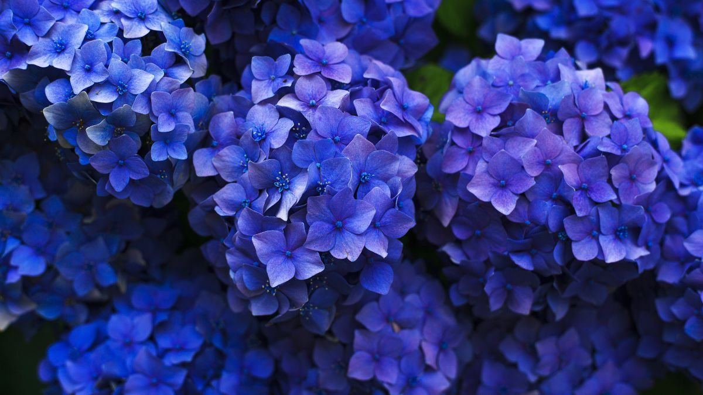
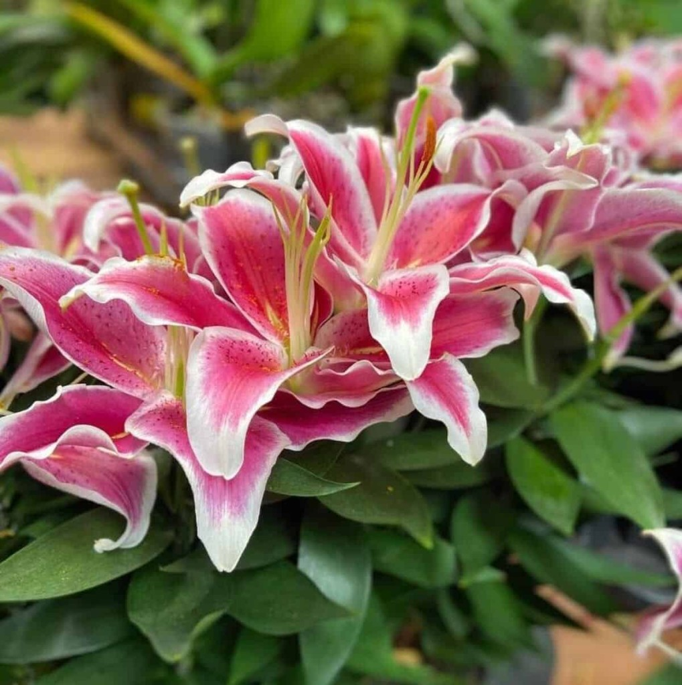

Os diferentes tipos de flores
Dentre as características das flores que promovem a atração de polinizadores, podemos citar a grande quantidade de néctar de algumas espécies e a coloração das pétalas de outras. As flores exercem um papel importante na atração de polinizadores.

Conheça a beleza da natureza
As flores são símbolo de diversas emoções elas nos ensinam muito sobre a expressão de sentimentos. Com o gesto de presentear com flores, expressamos amor, gratidão e amizade. As flores nos lembram da importância de nutrir relacionamentos, expressar emoções e cultivar conexões significativas.


Explore as diversidades
